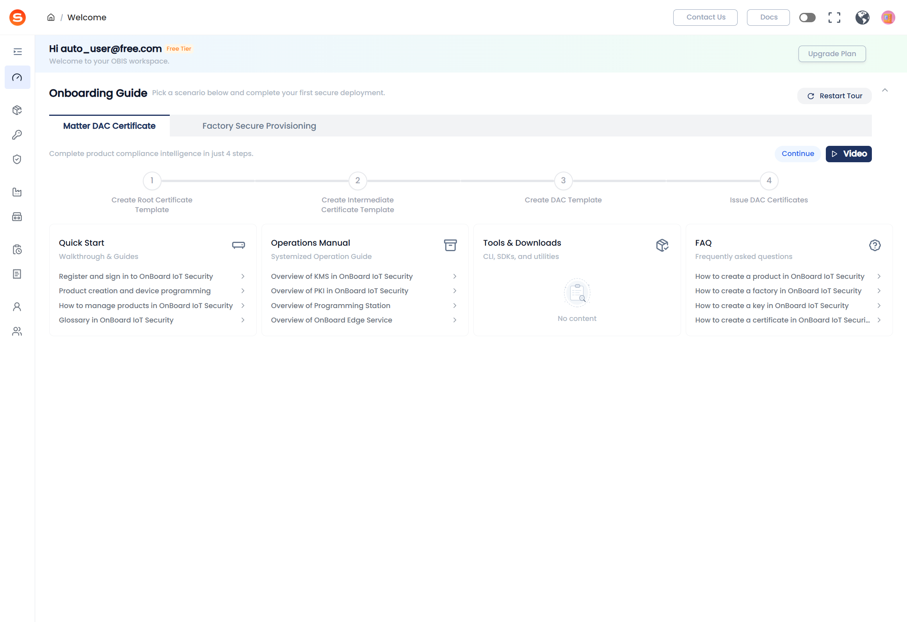
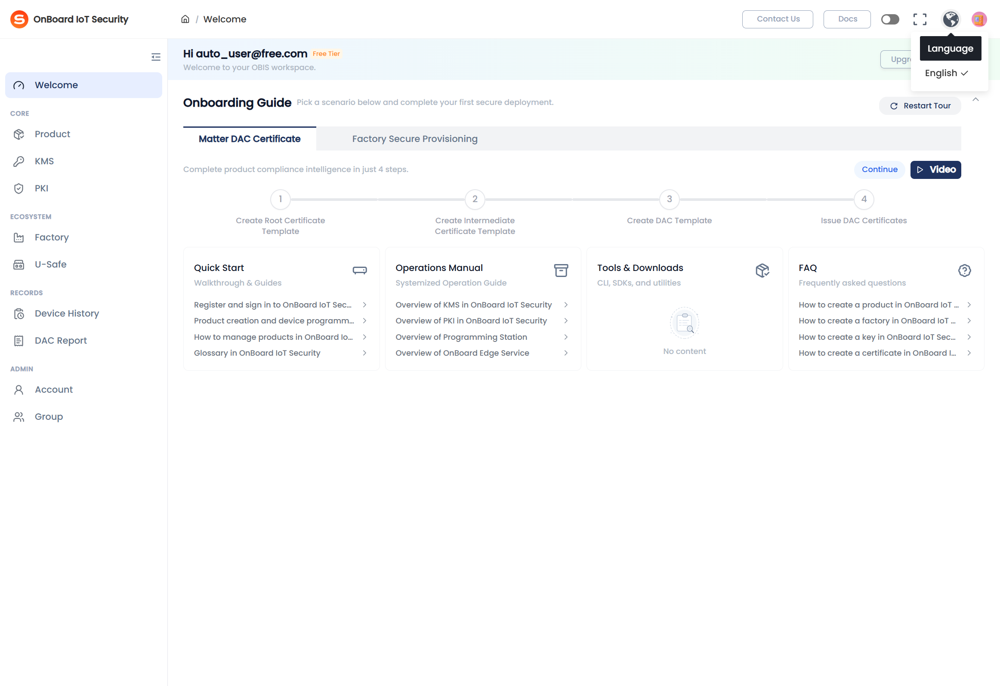
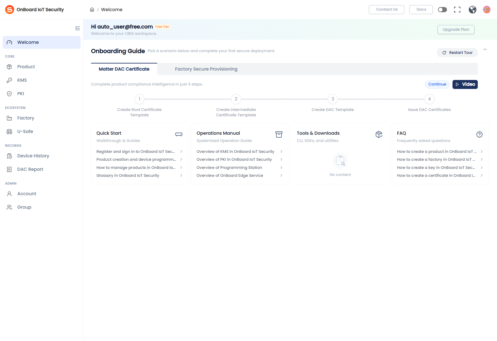
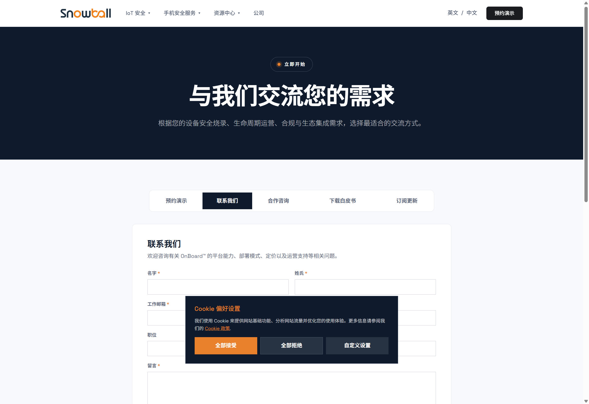
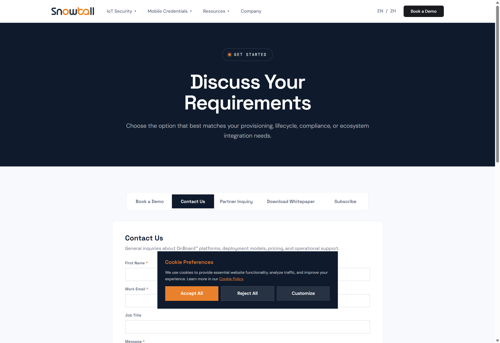
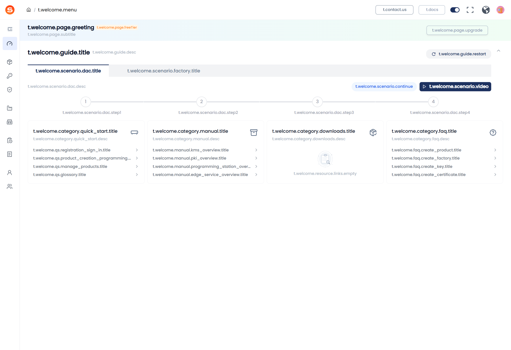

【自注册】003-03 常驻工具栏与资源中心 — UAT 测试报告
13总用例
5通过
4失败
1阻塞
2跳过
1待确认
疑似缺陷（3 + 1 待确认）
- BUG-002 [P0] Tools & Downloads 无预置内容 — UAT 环境 Tools 卡片显示「暂无内容 / No content」，无法验证 Drawer 打开、关闭及直接下载（TBR-02～04 阻塞）。
- BUG-003 [P1] Docs 跳转 URL 与用例规格路径不一致 — EN 实际
…/obis、ZH 实际 …/zh-cn/obis；用例写 …/docs/obis、…/docs/zh-cn/obis（UAT 文档站是否省略 /docs 段待产品确认）。
- BUG-005 [P2] Contact Us 中文 URL 路径 — 实际
https://www.snowballtech.com/zh-cn/contact-us；用例期望 …/zh/contact-us（zh-cn vs zh 待确认）。
- RISK-001 [P2] 页头 Switch 误触风险 — Switch 非语言切换；误点曾导致全页 i18n 键名展示。建议明确 UI 区分或禁用该 Switch 在 Welcome 页。
TBR-01 Welcome 工具栏布局 — 底部四模块等宽网格 PASS P0
| # | 步骤 | 预期 | 实际 | 结果 | 截图 |
|---|
| 1 |
滚动至页面底部工具栏区域 |
工具栏位于 Welcome 底部且常驻可见 |
Welcome 页加载成功，底部资源卡片区可见 |
PASS |
 |
| 2 |
查看四张卡片布局与模块名称 |
4 张卡片 Quick Start / Operations Manual / Tools & Downloads / FAQ 等宽网格 |
4 模块均可见；DOM 测量四卡宽度均为 231px、top=405，呈等宽排列 |
PASS |
|
TBR-02 Tools 模块 — 头部打开 Drawer 展示全部工具 FAIL P0
| # | 步骤 | 预期 | 实际 | 结果 | 截图 |
|---|
| 1 |
统计卡片默认区可见工具条数 |
卡片列表部 ≤4 条 |
Tools 卡片显示 No content，可见条目 0 条（前置 >4 条未满足） |
FAIL |
 |
| 2 |
点击 Tools & Downloads 卡片头部 |
打开列表 Drawer（非新标签页） |
点击标题后未检测到 Drawer / dialog 组件 |
FAIL |
|
| 3 |
统计 Drawer 内工具条数 |
Drawer 展示全部工具；不分页 |
Drawer 未打开，无法统计 |
FAIL |
— |
关联 BUG-002：UAT 无 Tools 预置数据。
TBR-03 Tools Drawer — 关闭按钮 SKIP P0
| — | 点击 Drawer 关闭按钮 | Drawer 关闭 | 依赖 TBR-02 Drawer 打开，未执行 | SKIP | — |
TBR-04 Tools 模块 — 卡片默认区直接下载 FAIL P0
| 1 |
卡片默认区点击下载按钮 |
触发直接下载 |
Tools 区无下载条目（No content），无可点击下载按钮 |
FAIL |
|
关联 BUG-002。
TBR-05 页头导航 — Docs / Contact Us / 全屏 / 语言 PASS P0
| 1 |
查看页头右侧；点击地球图标 |
可见 Docs、Contact Us、全屏、语言下拉（中文 / English） |
页头可见 Docs、Contact Us、圆形全屏按钮、地球图标；点击地球图标弹出 Language 菜单含「中文」「English」 |
PASS |
 |
页头另有 Switch 控件，非语言切换入口（与地球图标相邻，从左到右：Docs → Switch → 全屏 → 地球 → 头像）。
TBR-06 页头 Docs — 英文环境 FAIL P0
| 1 |
点击 Docs |
新标签打开文档站 |
新标签页已打开 |
PASS |
|
| 2 |
查看跳转 URL |
https://docs-sit.snowballtech.com/docs/obis |
实际 URL：https://docs-sit.snowballtech.com/obis |
FAIL |
|
关联 BUG-003。
TBR-07 页头 Docs — 中文环境 FAIL P0 （语言切换 PASS，URL 路径待确认）
| 1 |
地球图标 → 中文 → 点击文档中心 |
URL 含 docs/zh-cn/obis |
语言切换正常（页头变为「文档中心」「联系我们」）；新标签 URL：https://docs-sit.snowballtech.com/zh-cn/obis（缺 /docs 前缀） |
FAIL |
|
关联 BUG-003。中文文档站内容正确加载，路径与用例字面不一致。
TBR-08 Contact Us — Trial 用户可见 PASS P0
| 1 |
Welcome 页查看 Contact Us |
Contact Us 可见且可点击 |
页头 Contact Us 按钮可见（Free Tier 账号） |
PASS |
 |
TBR-09 Contact Us — 已签约租户隐藏 BLOCKED P0
| 1–2 |
Mixed_Tenant_User 切换租户验证 |
存在已签约租户时 Contact Us 不可见 |
当前仅 auto_user@free.com，无 Mixed_Tenant_User 凭据 |
BLOCKED |
— |
TBR-10 Contact Us — 中文环境外链 FAIL P0 （功能 PASS，URL 路径待确认）
| 1 |
中文环境下点击联系我们 |
新窗口 …/zh/contact-us |
新标签打开中文联系页；URL：https://www.snowballtech.com/zh-cn/contact-us（实际为 zh-cn 非 zh） |
FAIL |
 |
关联 BUG-005。新窗口打开行为符合预期。
TBR-11 Contact Us — 英文环境外链 PASS P0
| 1 |
英文环境点击 Contact Us |
新窗口打开 https://www.snowballtech.com/contact-us |
新标签页 URL 正确，非弹窗 |
PASS |
 |
TBR-12 页头全屏 — 切换全屏 SKIP P1
| 1 |
点击全屏按钮 |
进入全屏 |
点击页头圆形按钮后 document.fullscreenElement 仍为 null（自动化环境可能限制 Fullscreen API） |
SKIP |
— |
| 2 |
Esc 退出 |
退出全屏 |
未进入全屏，跳过 |
SKIP |
— |
建议人工在浏览器中复测全屏按钮。
TBR-13 Welcome 壳层布局 — 对照 Figma PASS P2
| 1 |
对照底部四卡、页头、Drawer 壳层 |
布局/间距与 Figma 一致 |
自动化仅确认：底部四卡网格 + 页头操作区结构存在；像素级对比需人工（P2） |
PASS |
 |